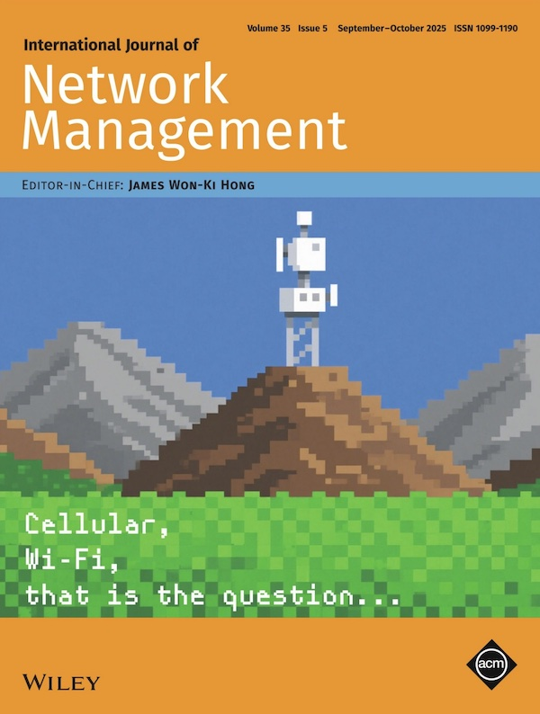

Lizhuang Tan (谭立状)
Lizhuang Tan (谭立状)
Associate Researcher, Ph.D.
Shandong Provincial Key Laboratory of Computer Networks,
Shandong Computer Science Center (National Supercomputer Center in Ji'nan),
Qilu University of Technology (Shandong Academy of Sciences)
tanlzh@sdas.org/lzhtan@qlu.edu.cn
Supercomputing Technology Park, No. 28666, Jingshi East Road, Ji'nan, Shandong, China.
Since July 2022, I have been working in Shandong Computer Science Center (National Supercomputer Center in Ji'nan), China. From October 2024 to October 2025, I am a visiting scholar in Professor James Won-Ki Hong's DPNM Lab at Pohang University of Science and Technology, Korea. From April 2021 to June 2022, I worked as a R&D intern in the High-Speed Network Team of ByteDance, working on RDMA/RoCE under the leadership of Dr. Zhuo Jiang. In June 2022, I received my Ph.D. degree from the National Engineering Research Center of Advanced Network Technologies, Beijing Jiaotong University. In June 2017, I received my Bachelor of Engineering degree in Communication Engineering and my Bachelor of Laws degree from Shandong Normal University. My research interest is the Network Measurement, Testing and Management, especially Software-defined Networks and Data Center Network. These all serve the National Supercomputing Internet, which is a project that explore how to combine high-performance computing (supercomputing) with wide-area computer networks.

Proposed an SRv6 based active network telemetry architecture and implementation strategy (2nd Internet Architecture Academic Conference, China Information and Communications Conference, 2019). Integrated the segment routing label stack into custom probes by encoding it as IPv6 extension headers, and enabled flexible orchestration of telemetry instructions and paths with an improved breadth first search algorithm. This is among the earliest research efforts to combine SRv6 with INT in the field. Centered on two system goals, improving telemetry freshness and reducing telemetry intrusiveness, proposed a multi objective optimization method for selecting telemetry carrying flows (CN Patent 202010609191.7, 2020; APNOMS, 2021), and developed and open sourced an orchestration solver based on NSGA (Non dominated Sorting Genetic Algorithm). Proposed, early in the community, a hybrid in band telemetry task orchestration algorithm that fuses active and passive telemetry (APNOMS, 2022). Published a survey on in band network telemetry (Computer Networks, 2021), providing a systematic overview of core implementation techniques, optimization methods, and deployment practices. Proposed a coloring based packet loss detection and localization mechanism (IEEE Network Letters, 2021) and a packet loss detection and localization solution for multipath scenarios, both of which were adopted by an in band telemetry reference specification. First identified flow coupled missing telemetry information, and proposed quality diagnosis and missing data recovery algorithms for in band telemetry (TNSM, 2021). First identified orchestration induced out of order telemetry and proposed a reordering architecture that combines online processing with offline sorting (APNOMS, 2025). Built the first spatiotemporal database for in band telemetry storage, IntDB (APNOMS Best Paper Nomination, 2025). Contributed to the design of Hostping, ByteDance’s in host latency monitoring and fault diagnosis system (NSDI, 2023), and the prototype has been deployed in ByteDance’s data center network monitoring system.

Developed a prototype Software Defined Network Impairment Emulator (ZL202320329297.0, ZL202310224941.2, 2023), with network impairment logic implemented on a programmable hardware switch. The design includes: (1) intent driven network impairment configuration (ZL2023117778457.0, 2023), enabling high level specification and automated translation of impairment policies; (2) serial and parallel composable deployment of impairment functions (HPCC, 2024), supporting flexible function chaining and hybrid execution models; and (3) fine grained impairment realization through CPU–Tofino co design, leveraging coordinated control plane and data plane processing. The system satisfies both functional and performance requirements for realistic network impairment emulation, significantly enhances the programmability and expressiveness of impairment modeling, and effectively reduces the cost and operational overhead of network testing and experimentation.

(1) Network Management: Proposed a preference aware and two sided matching based traffic scheduling framework for data centers, formulating the path flow assignment problem with preference ordering and developing a two sided matching algorithm that jointly ensures stability and optimality of the matching outcome (ETT Cover Paper, 2022). Designed a service function chain aggregation mapping algorithm by modeling function chain placement as a mixed integer linear programming problem; the proposed approach significantly reduces both operational cost and end to end latency (JNCA, 2024). Developed a lossless network waterline auto tuning mechanism, ByteTuning (TCC, 2024), which enables end to end RoCEv2 performance optimization across switches and NICs. By minimizing port coverage sets, applying data aggregation, and introducing configuration language translation, the system reduces the search space and improves tuning efficiency; the prototype has been deployed in ByteDance’s data center network. To address performance bottlenecks in dynamic reconfiguration of FPGA based NICs, proposed a space division multiplexing based FPGA virtualized networking architecture (APNOMS, 2025), substantially improving resource utilization and processing throughput. Implemented an asynchronous traffic shaping prototype based on the BMv2 software switch (APNOMS, 2023), including working components, worker threads, and shaping parameter configuration; in both single priority and multi priority scenarios, the measured queuing delay remains below the theoretical delay bound.
(2) Network Transport: Proposed DCQUIC, a QUIC based transport protocol tailored for data center networks (INFOCOM ICCCN, 2021), and further accelerated connection establishment by offloading key negotiation to FPGA hardware (ICCCN, 2025). Compared with DCTCP and DCUDP, DCQUIC demonstrates superior performance in connection setup latency, transmission efficiency, flexibility, and reliability. Open sourced a modular QUIC development prototype (CoNEXT Poster, 2020) and the OpenQUIC project, which standardizes congestion control, flow control, and cryptographic modules to enhance extensibility and interoperability. Proposed the proactive connection migration mechanism (IJNM Cover Paper, 2025; MobiQuitous, 2020) for QUIC that decouples connection management from vertical and horizontal network handovers, applies multi armed bandit based exploration and exploitation of link quality, and leverages redundant access with adaptive migration to improve reliability and performance; an IETF Internet Draft has been submitted. Proposed MPDTP, a block scheduling mechanism for multipath transport (NaNA Best Paper Award, 2021), which jointly considers path delay, throughput, and block deadline characteristics to significantly improve transmission efficiency.
(3) Supercomputing Internet / Shandong Computing Network: Authored the monograph Network Operating System SONiC: Principles, Technologies, and Practice. Designed a SDWAN-based networking architecture for the Supercomputing Internet, and led the drafting of the national standard “Intelligent Computing - Supercomputing Internet - Technical Requirements for Networking.”


PCM-QUIC was selected as the FEATURED COVER by International Journal of Network Management.
Network Operating System SONiC: Principles, Technologies and Practices was published and released.

ByteTuning is accepted by IEEE Transacitons on Cloud Computing.
A project on Buffer Management of Data Center Networking was funded by the National Natural Science Foundation of China.
I have been selected for the Korea-China Young Scientists Exchange Program and will be conducting network management research at POSTECH.

A project on In-band Network Telemetry was funded by the Natural Science Foundation of Shandong.
LossSight won the second prize of the 25th China Robotics and Artificial Intelligence Competition.
We will host NaNA'23 in Qingdao, P.R.China in Aug. 2023, and welcome submissions on networking.
A project on FPGA-based offloading in data centers was funded by the Natural Science Foundation of Shandong and Inspur Inc.
Path-Flow Matching was selected as FEATURED COVER PAPER by Wiley Transactions on Emerging Telecommunications Technologies.

Participated in the China Computing Conference 2022 and made a report.
Got the PhD from Beijing Jiaotong University. Thanks to my mentor, Prof. Wei Su.